Veb aplikacija za rezervaciju termina u bazenu
Tehnička specifikacija projekta — opis arhitekture, modela podataka, API endpointa i implementiranih funkcionalnosti
PoolBuddy je full-stack veb aplikacija za upravljanje terminima plivanja i rezervacijama u gradskom bazenu. Cilj projekta je omogućiti korisnicima da online pregledaju dostupne termine, rezervišu mesta i upravljaju sopstvenim rezervacijama, dok administrator ima potpunu kontrolu nad raspoređivanjem termina, korisnicima i CMS sadržajem sajta.
Aplikacija podržava tri tipa korisnika sa različitim nivoima pristupa:
| Tehnologija | Verzija | Uloga |
|---|---|---|
| Node.js | 20 LTS | JavaScript runtime okruženje |
| Express | 4.x | HTTP framework, rutiranje, middleware |
| TypeScript | 5.x (strict) | Statičko tipiziranje, kompajliranje |
| mysql2/promise | 3.x | Async MySQL drajver sa connection pool-om |
| jsonwebtoken | 9.x | Generisanje i verifikacija JWT tokena |
| bcryptjs | 2.x | Heširanje lozinki (10 rundi) |
| zod | 3.x | Schema validacija tela zahteva |
| uuid | 9.x | Generisanje UUID v4 primarnih ključeva |
| express-rate-limit | 7.x | Zaštita od brute-force napada na auth rute |
| cors | 2.x | Cross-origin politika |
| dotenv | 16.x | Upravljanje environment varijablama |
| Tehnologija | Verzija | Uloga |
|---|---|---|
| React | 18.x | UI biblioteka, CSR (client-side rendering) |
| Vite | 5.x | Build alat i dev server sa HMR |
| TypeScript | 5.x (strict) | Tipiziranje komponenti i API sloja |
| React Router | 6.x | Deklarativno rutiranje, zaštićene rute |
| Axios | 1.x | HTTP klijent, request/response interceptori |
| React Hook Form | 7.x | Upravljanje formama bez nepotrebnih re-rendera |
| Zod | 3.x | Validacija formi (deli šeme sa backendom) |
| Tailwind CSS | 3.x | Utility-first CSS framework |
/api/v1/* na Express server (port 3000), čime se izbegavaju CORS problemi u razvoju.env fajl (DB kredencijali, JWT tajne, CORS origin)Sistem je organizovan po četvoroslojnoj arhitekturi. Svaki sloj ima jasno definisanu odgovornost i komunicira isključivo sa susednim slojevima.

Slika 1 — Četvoroslojna arhitektura: korisnik, frontend, backend, baza podataka
| Sloj | Tehnologija | Odgovornost |
|---|---|---|
| 1 — Korisnik | Internet pregledač | Šalje HTTP zahteve, prikazuje HTML/CSS/JS koji vraća frontend server |
| 2 — Frontend | React + TypeScript (CSR) | Komponente, klijentsko rutiranje, lokalna validacija formi, JWT u memoriji, Axios interceptori za automatski refresh tokena |
| 3 — Backend | Node.js + Express + TypeScript | REST API, autentifikacija/autorizacija, poslovna logika, Zod validacija, parametrizovani SQL upiti |
| 4 — Baza podataka | MySQL 8.0 (Docker) | Trajno čuvanje podataka, FK ograničenja, BEFORE INSERT okidači (treći sloj validacije) |
Backend prati modularnu organizaciju, gde svaki domenski modul sadrži četiri fajla:
*.schema.ts — Zod šeme za validaciju ulaznih podataka*.service.ts — poslovna logika i DB operacije*.controller.ts — Express handler funkcije*.routes.ts — definicija ruta sa middleware lancimaModuli: auth, users, sessions, reservations, pages

Slika 2 — Aktori i slučajevi korišćenja sistema
| Aktor | Slučajevi korišćenja |
|---|---|
| Posetilac | Pregled javnih stranica (CMS), Registracija naloga, Prijava na portal |
| Korisnik | Pregled slobodnih termina (sa filterom po datumu), Rezervacija termina, Pregled sopstvenih rezervacija, Otkazivanje rezervacije, Izmena profila (kontakt podaci, lozinka) |
| Administrator | Kreiranje / izmena / otkazivanje / brisanje termina, Pregled rezervacija po terminu, Lista korisnika i aktivacija/deaktivacija naloga, Kreiranje / izmena / brisanje CMS stranica, Promena statusa objave stranice |

Slika 3 — ER dijagram baze podataka (bazeni)
user| Kolona | Tip | Opis |
|---|---|---|
user_id | VARCHAR(36) PK | UUID v4, generiše se u aplikaciji |
first_name | VARCHAR(50) NN | Ime korisnika |
last_name | VARCHAR(50) NN | Prezime korisnika |
email | VARCHAR(120) UQ NN | Email adresa, jedinstven identifikator za prijavu |
phone | VARCHAR(20) NN | Broj telefona (+381...) |
password_hash | VARCHAR(255) NN | bcrypt hash lozinke (10 rundi) |
role | ENUM('admin','user') | Uloga korisnika, default: 'user' |
is_active | TINYINT(1) | Aktivnost naloga, default: 1. Deaktiviran korisnik ne može da se prijavi |
created_at | DATETIME | Vreme registracije |
updated_at | DATETIME | Automatski se ažurira pri svakoj izmeni (ON UPDATE NOW()) |
pool_session| Kolona | Tip | Opis |
|---|---|---|
session_id | VARCHAR(36) PK | UUID v4 |
session_date | DATE NN | Datum termina |
start_time | TIME NN | Vreme početka (HH:MM) |
end_time | TIME NN | Vreme završetka; mora biti veće od start_time |
capacity | INT NN | Maksimalan broj rezervacija |
status | ENUM('open','cancelled') | Status termina; otkazivanje kaskadno otkazuje rezervacije |
created_by | VARCHAR(36) FK→user | Administrator koji je kreirao termin |
created_at / updated_at | DATETIME | Vremenske oznake |
reservation| Kolona | Tip | Opis |
|---|---|---|
reservation_id | VARCHAR(36) PK | UUID v4 |
user_id | VARCHAR(36) FK→user NN | Korisnik koji je napravio rezervaciju |
session_id | VARCHAR(36) FK→pool_session NN | Termin za koji važi rezervacija |
status | ENUM('active','cancelled_by_user','cancelled_by_admin') | Status rezervacije |
reserved_at | DATETIME | Vreme kreiranja rezervacije |
cancelled_at | DATETIME NULL | Vreme otkazivanja |
cancelled_by | VARCHAR(36) FK→user NULL | Ko je otkazao (korisnik ili admin) |
UNIQUE KEY uq_user_session (user_id, session_id) — jedan korisnik može imati
samo jedan red po terminu. Ponovljena rezervacija nakon otkazivanja se rešava reaktivacijom
postojećeg reda (UPDATE, a ne INSERT), čime se izbegava kršenje unique ograničenja.
page| Kolona | Tip | Opis |
|---|---|---|
page_id | VARCHAR(36) PK | UUID v4 |
slug | VARCHAR(80) UQ NN | URL identifikator (format: mala-slova-sa-crticom) |
title | VARCHAR(120) NN | Naslov stranice |
content | LONGTEXT | HTML sadržaj stranice |
is_published | TINYINT(1) | 1 = objavljena, 0 = skrivena (draft) |
sort_order | INT | Redosled prikaza u listi, default: 0 |
updated_by | VARCHAR(36) FK→user NULL | Administrator koji je poslednji izmenio stranicu |
created_at / updated_at | DATETIME | Vremenske oznake |
refresh_token| Kolona | Tip | Opis |
|---|---|---|
token_id | VARCHAR(36) PK | UUID v4 |
user_id | VARCHAR(36) FK→user | Vlasnik tokena (ON DELETE CASCADE) |
token_hash | VARCHAR(255) UQ | SHA-256 heš refresh tokena — nije u bazi u čistom tekstu |
expires_at | DATETIME | Datum isteka (7 dana od izdavanja) |
revoked_at | DATETIME NULL | Vreme opoziva; NULL = token aktivan |
created_at | DATETIME | Vreme izdavanja |
auth)Sistem koristi JWT dual-token strategiju: kratkotrajan access token (15 minuta) i dugotrajan refresh token (7 dana) sa rotacijom pri svakoj upotrebi.
localStorage (heš u bazi), access token samo u React state-u.AuthContext i dodavanjem jti (UUID) klajma u svaki refresh token.revoked_at),
access token i localStorage se brišu na frontendu.users)sessions)cancelled,
a sve aktivne rezervacije tog termina se kaskadno menjaju na cancelled_by_admin
unutar jedne SQL transakcije.reservations)cancelled_by_user.pages)sort_order, i prikaz pojedinačne stranice po slug-u. HTML sadržaj se renderuje direktno.mala-slova-sa-crticom i jedinstven), HTML sadržaj, redosled i status objave.
Sve rute imaju prefiks /api/v1. Zahtevi i odgovori su u JSON formatu.
Greške vraćaju { "message": "..." } sa odgovarajućim HTTP statusom.
Authorization: Bearer <access_token> zaglavlje.
Admin rute zahtevaju i ulogu role = 'admin'.
/authfirst_name, last_name, email, phone, password
javno
email, password. Vraća: access_token, refresh_token
javno
refresh_token. Vraća novi par tokena, opoziva stari
javno
refresh_token. Opoziva refresh token u bazi
korisnik
first_name, last_name, email, phone, current_password, new_password
korisnik
is_active: boolean
admin
?from=YYYY-MM-DD&to=YYYY-MM-DD
korisnik
session_date, start_time, end_time, capacity
admin
session_id. Reaktivira otkazanu ako postoji
korisnik
sort_order
javno
slug, title, content, is_published, sort_order
admin
| Mehanizam | Detalji |
|---|---|
| Access token (JWT) | HS256, važi 15 minuta. Čuva se isključivo u React state (ne u localStorage/cookie) — nedostupan XSS napadima. Sadrži: userId, role, firstName, lastName. |
| Refresh token (JWT) | HS256 + jedinstveni jti (UUID v4) klajm, važi 7 dana. Čuva se u localStorage. U bazi se čuva samo SHA-256 heš — kompromitovana baza ne otkriva tokene. |
| Token rotacija | Pri svakom obnavljanju, stari refresh token se opoziva i izdaje novi par. Sprečava ponovnu upotrebu ukradenog tokena. |
| Lozinke | bcrypt, 10 rundi soli. Nikada se ne čuvaju u čistom tekstu. |
| Deaktivacija naloga | Deaktiviran korisnik ne može da se prijavi ni da obnovi token (proverava se is_active u oba toka). |
| Mehanizam | Detalji |
|---|---|
| Rate limiting | Auth rute ograničene na 20 zahteva / 15 minuta po IP adresi (express-rate-limit). Sprečava brute-force napade na login i refresh endpointe. |
| Autorizacija po ulozi | authenticate middleware verifikuje JWT. requireRole('admin') middleware blokira pristup admin rutama za obične korisnike (403). |
| SQL injection | Svi upiti koriste parametrizovane prepared statements (pool.execute('... WHERE id = ?', [id])). Direktna konkatenacija stringova nigde nije prisutna. |
| CORS | Dozvoljeni origin se definiše kroz CORS_ORIGIN environment varijablu. |
| Vlasništvo nad resursima | Korisnik može otkazati samo sopstvenu rezervaciju. Pokušaj pristupa tuđoj vraća 403. |
| Mutex za refresh | Axios response interceptor koristi queue mehanizam: ako je refresh već u toku, sledeći 401 čeka umesto da šalje drugi identičan zahtev. Rešava race condition koji je prouzrokovao DB unique constraint grešku. |
validate(schema)): server-side validacija tela zahteva pre ulaska u service slojend_time > start_time)| URL | Pristup | Opis |
|---|---|---|
/ | Javno | Početna stranica: hero sekcija, prednosti, koraci, CMS stranice, CTA |
/register | Javno | Registracija novog naloga sa validacijom forme |
/login | Javno | Prijava, čuva refresh token u localStorage |
/stranice | Javno | Lista svih objavljenih CMS stranica |
/stranice/:slug | Javno | Prikaz sadržaja CMS stranice, renderuje HTML |
/sessions | Korisnik | Lista slobodnih termina sa filterom po datumu i progress barom kapaciteta |
/my-reservations | Korisnik | Pregled svih rezervacija (aktivne / otkazane), otkazivanje |
/profile | Korisnik | Profil: izmena kontakt podataka i promena lozinke |
/admin/sessions | Admin | Upravljanje terminima: tabela, modali za kreiranje/izmenu/otkazivanje/brisanje, pregled rezervacija po terminu |
/admin/pages | Admin | Upravljanje CMS stranicama: tabela, modali za kreiranje/izmenu/brisanje, toggle objave |
ProtectedRoute — prikazuje sadržaj samo ako je korisnik prijavljen; inače redirect na /loginAdminRoute — prikazuje sadržaj samo za korisnike sa ulogom admin; inače 403 ekranProtectedRoute prikazuje prazan ekran umesto redirecta — sprečava lažni logoutAuthContext)useRef-u — ref omogućava da Axios interceptor uvek čita najnoviji token bez čekanja na re-renderisRefreshingRef mutex| Polje | Pravilo |
|---|---|
| Validan email format, max 120 znakova, jedinstven u sistemu | |
| Lozinka (registracija) | Min 8, max 72 znaka |
| Telefon | Regex /^\+?[0-9]+$/, min 6, max 20 znakova |
| Datum termina | Format YYYY-MM-DD, ne sme biti u prošlosti (provera u servisu) |
| Vreme termina | Format HH:MM, end_time > start_time (frontend Zod refinement + DB okidač) |
| Kapacitet | Pozitivan ceo broj |
| Page slug | Regex /^[a-z0-9]+(?:-[a-z0-9]+)*$/, max 80 znakova, jedinstven |
| Sort order | Non-negativan ceo broj |
PoolBuddy — Tehnička specifikacija | PIIVT | 2026.